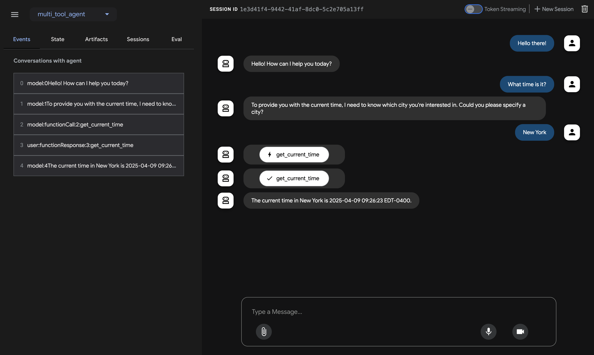

Quickstart (ADK TypeScript)¶
This quickstart guides you through installing the Agent Development Kit (ADK) for TypeScript, setting up a basic agent with multiple tools, and running it locally either in the terminal or in the interactive, browser-based dev UI.
This quickstart assumes a local development environment (VS Code, WebStorm, etc.) with Node.js (v18+ recommended), npm/yarn, and terminal access. This method runs the application entirely on your machine and is recommended for development and testing.
1. Set up Environment & Install ADK TypeScript¶
Environment Setup:
- Ensure you have Node.js (v18+) and npm (or yarn) installed.
Create Project:
Navigate to the directory where you want to create your project and create a new folder:
# Create and navigate to a new project directory
mkdir my-adk-project
cd my-adk-project
# Initialize npm project (creates package.json)
npm init -y
# Install ADK TypeScript and other required dependencies
npm install adk-typescript dotenv @types/dotenv
Note: The command-line tool uses the prefix
npx adk-tswhen running commands locally.
2. Create Agent Project¶
Project structure¶
You will need to create the following project structure:
my-adk-project/ # Your parent project folder
├── multi_tool_agent/ # Your agent's code folder
│ └── agent.ts # Agent definition lives here
├── .env # API keys and configuration
├── package.json # Node.js project manifest
├── tsconfig.json # TypeScript configuration
└── dist/ # (Created after build) Compiled JavaScript output
Create the agent folder inside your project:
TypeScript Configuration¶
Create the tsconfig.json file in your project root (my-adk-project/):
Copy and paste the following content into your tsconfig.json file:
{
"compilerOptions": {
"target": "ES2020",
"module": "Node16", // Required for proper module resolution
"outDir": "./dist",
"rootDir": "./", // Assumes agent.ts is directly in multi_tool_agent
"strict": true,
"esModuleInterop": true,
"skipLibCheck": true,
"forceConsistentCasingInFileNames": true,
"moduleResolution": "node16", // Required for subpath imports
"resolveJsonModule": true,
"declaration": true // Optional: generates .d.ts files
},
"include": ["multi_tool_agent/**/*.ts"], // Include files in your agent folder
"exclude": ["node_modules", "dist"]
}
Add a build script to your package.json:
# Update package.json with build scripts using npm pkg commands
npm pkg set main="dist/multi_tool_agent/agent.js"
npm pkg set scripts.build="tsc"
npm pkg set scripts.start="node dist/multi_tool_agent/agent.js"
agent.ts¶
Create an agent.ts file inside the multi_tool_agent/ folder:
Copy and paste the following code into multi_tool_agent/agent.ts:
import { LlmAgent as Agent } from 'adk-typescript/agents';
import { LlmRegistry } from 'adk-typescript/models';
import { FunctionTool, ToolContext } from 'adk-typescript/tools';
// --- Tool Functions ---
/**
* Returns current weather information for a specified city
* @param params Object containing city name
* @param context Optional ToolContext
* @returns Promise resolving to weather information or error
*/
async function getWeather(
params: Record<string, any>,
context?: ToolContext
): Promise<{ status: string; report?: string; error_message?: string }> {
const city = params.city;
console.log(`--- Tool: getWeather called for city: ${city} ---`);
const cityNormalized = city.toLowerCase().trim();
const mockWeatherDb: Record<string, { status: string; report: string }> = {
"newyork": {status: "success", report: "The weather in New York is sunny with a temperature of 25°C."},
"london": {status: "success", report: "It's cloudy in London with a temperature of 15°C."},
"tokyo": {status: "success", report: "Tokyo is experiencing light rain and a temperature of 18°C."},
};
if (mockWeatherDb[cityNormalized]) { return mockWeatherDb[cityNormalized]; }
else { return {status: "error", error_message: `Sorry, I don't have weather information for '${city}'.`}; }
}
/**
* Gets the current local time and timezone.
* @param params Empty object (no parameters needed)
* @param context Optional ToolContext
* @returns Promise resolving to time information
*/
async function getCurrentTime(
params: Record<string, any>, // Use Record<string, any> for compatibility with ToolFunction
context?: ToolContext
): Promise<{ currentTime: string; timezone: string; }> {
console.log(`--- Tool: getCurrentTime called ---`);
const now = new Date();
return {
currentTime: now.toLocaleTimeString(),
timezone: Intl.DateTimeFormat().resolvedOptions().timeZone
};
}
// --- Tool Wrappers ---
const getWeatherTool = new FunctionTool({
name: "getWeather",
description: "Returns current weather information for a specified city",
fn: getWeather,
functionDeclaration: {
name: "getWeather",
description: "Returns current weather information for a specified city",
parameters: {
type: 'object',
properties: {
city: { type: 'string', description: 'The name of the city (e.g., "New York")'}
},
required: ['city']
}
}
});
const getCurrentTimeTool = new FunctionTool({
name: "getCurrentTime",
description: "Gets the current local time and timezone.",
fn: getCurrentTime,
functionDeclaration: {
name: "getCurrentTime",
description: "Gets the current local time and timezone.",
parameters: { type: 'object', properties: {} } // No parameters
}
});
// --- Agent Definition ---
// Use LlmRegistry to get a model instance
const agentLlm = LlmRegistry.newLlm("gemini-1.5-flash"); // Or another compatible model
// Export the root agent for ADK tools to find
export const rootAgent = new Agent({
name: "weather_time_agent", // Unique agent name
model: agentLlm, // LLM instance
description: "Provides current weather and time information for cities.",
instruction: "You are a helpful assistant. Use the 'getWeather' tool for weather queries " +
"and the 'getCurrentTime' tool for time queries. Provide clear answers based on tool results. " +
"If asked for weather AND time, use both tools.",
tools: [getWeatherTool, getCurrentTimeTool], // List of available tools
});
// Optional: Default export if needed by other parts of your application
// export default { rootAgent };
.env¶
Create a .env file in your project root (my-adk-project/):
Add your API key and platform configuration to this file. More instructions are in the next section.

3. Set up the model¶
Your agent needs credentials to securely call the LLM service.
- Get an API key from Google AI Studio.
-
Open the
.envfile in your project root and add the following content: -
Edit the
.envfile to replacePASTE_YOUR_ACTUAL_API_KEY_HEREwith your actual API key.
- You need an existing Google Cloud account and project.
- Set up a Google Cloud project.
- Set up the gcloud CLI.
- Authenticate to Google Cloud for Application Default Credentials (ADC):
gcloud auth application-default login. - Enable the Vertex AI API.
-
Open the
.envfile in your project root and add the following content: -
Edit the
.envfile to replaceYOUR_PROJECT_IDwith your actual Google Cloud project ID and update the location if needed.
4. Compile and Run Your Agent¶
First, build your TypeScript code:
Now you can interact with your agent using the ADK TypeScript CLI with npx:
Run the following command to launch the dev UI:
Step 1: Open the URL provided (usually http://localhost:3000) directly in your browser.
Step 2. In the top-left corner of the UI, select your agent: "multi_tool_agent".
Troubleshooting
If you do not see "multi_tool_agent" in the dropdown menu, ensure you ran npx adk-ts web from the correct directory (my-adk-project/ in this example) where your agent folder is located.
Step 3. Chat with your agent using the textbox:

Step 4. Inspect individual function calls, responses, and model interactions by clicking on the interaction steps:

Step 5. (Optional) Try voice interaction if the UI supports it and your model/setup allows:
Model support for voice/video streaming
Using voice/video streaming requires Gemini models that support the necessary APIs (see Streaming Quickstart and model documentation). You would also need to adjust the agent configuration and potentially the UI.

Run the following command to chat with your agent directly in the terminal:

Type your prompts and press Enter. To exit, use Cmd/Ctrl+C.
npx adk-ts api_server starts a local Express.js server, allowing you to test API requests before deployment:
# If multi_tool_agent is the only agent in the current dir
npx adk-ts api_server --agent_dir .
# Or specify the agent folder directly
npx adk-ts api_server --agent_dir multi_tool_agent

To learn how to use npx adk-ts api_server for testing, refer to the documentation on testing.
📝 Example prompts to try¶
- What is the weather in New York?
- What is the time in New York?
- What is the weather in Paris?
- What is the time in Paris?
- What time is it in London and what's the weather like?
🎉 Congratulations!¶
You've successfully created and interacted with your first agent using ADK TypeScript!
🛣️ Next steps¶
- Go to the tutorial: Learn how to build a multi-agent system, add memory, session state, and safety guardrails: tutorial.
- Delve into advanced configuration: Explore the setup section for deeper dives into project structure and configuration.
- Understand Core Concepts: Learn about ADK TypeScript Concepts (Link needs update for TS).